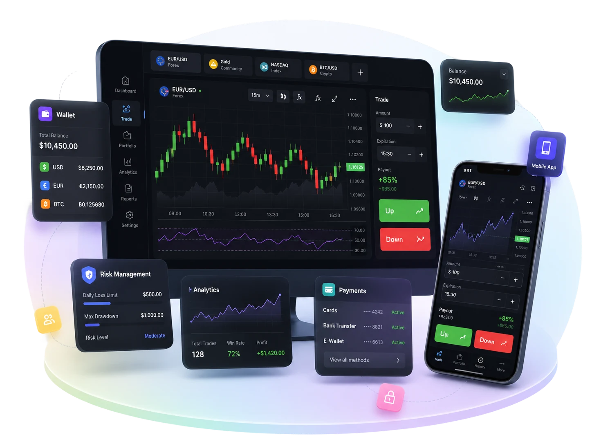

Fase 1
Marca, domínio e traderoom
Escolha a referência de broker. A Arcos transforma o fluxo em traderoom, identidade, domínio, idiomas e jornada mobile com sua própria marca.
Clone scripts para corretoras
Lance uma plataforma white-label inspirada em brokers líderes. A Arcos entrega traderoom, CRM, pagamentos, KYC/AML, apps, antifraude, afiliados e reporting sob sua própria marca.
O que você recebe
A Arcos monta os módulos que uma corretora precisa para lançar: traderoom, wallet, CRM, pagamentos, KYC/AML, risco, afiliados, apps e reporting.
Um build conectado
Cada clone script conecta a experiência de trading com os sistemas por trás dela: CRM, PSPs, KYC/AML, antifraude, apps, afiliados e reporting.

Clone scripts, explicado
Um clone script usa referências como Deriv, IQ Option, Quotex ou Pocket Option para definir produto, telas, módulos e jornada comercial.
O lançamento final é independente: sua marca, seu domínio, sua entidade, seus termos, seus assets e sua revisão legal.
Por que operadores usam esse caminho?
Você não perde meses desenhando cada fluxo básico. Começa por uma referência de mercado e foca no que realmente muda: marca, oferta, país, pagamentos e operação.
Ao mesmo tempo, não reutiliza logos, textos ou assets de terceiros. A plataforma nasce white-label e preparada para revisão legal.
Fase 1
Escolha a referência de broker. A Arcos transforma o fluxo em traderoom, identidade, domínio, idiomas e jornada mobile com sua própria marca.

Fase 2
Conecte cadastro, CRM, PSPs, KYC/AML, antifraude, suporte e regras de risco como parte do MVP, não como remendos depois do launch.

Fase 3
Depois do MVP, expanda campanhas, afiliados, métodos de pagamento, regiões e módulos sem reconstruir a plataforma do zero.
Como funciona
Você indica o broker, fluxo de trading, mercados, idiomas, apps e módulos que quer usar como base do escopo.
Definimos traderoom, carteira, CRM, pagamentos, KYC/AML, antifraude, afiliados, reporting e prioridades de lançamento.
Aplicamos sua marca, domínio, textos, permissões e integrações para que o produto final seja independente.
Validamos cadastro, KYC, depósito, trading, saque, responsividade, logs, performance e operação antes do go-live.
Dúvidas importantes
Temos a resposta
Não. Usamos brokers conhecidos como referência de funcionalidade. O produto final usa sua marca, domínio, UI, textos, termos e entidade.
Temos a resposta
Traderoom, carteira, CRM, backoffice, pagamentos, KYC/AML, antifraude, afiliados, apps, reporting e páginas comerciais, conforme escopo.
Temos a resposta
Sim. Pagamentos e operação comercial são tratados como parte central da plataforma, não como integrações esquecidas no final.
Temos a resposta
A tecnologia suporta KYC/AML, logs, limites e regras por país. Licenciamento, oferta e aprovação legal ficam com o operador.
Módulos
O escopo pode começar enxuto e crescer por fases, conforme mercado, PSPs, CRM, apps e revisão legal.
Referências de clone script
Deriv, IQ Option, Olymp Trade, Quotex, Pocket Option e outras referências ajudam a definir traderoom, mobile, CRM, pagamentos, afiliados e risco.
Arquitetura multi-produto para operadores que precisam de traderoom, automação e API.
Ver solução trading multi-asset com experiência visualInterface visual, onboarding guiado, conta demo e jornada mobile-first.
Ver solução fixed-time trading com educação integradaFluxo com conta demo, materiais educacionais, campanhas e suporte a usuários iniciantes.
Ver solução digital options e traderoom rápidoTraderoom direto, expiração configurável, demo account, PSPs e painel de afiliados.
Ver solução quick trading com social e copy featuresRecursos opcionais de copy, ranking, bônus, afiliados e notificações.
Ver solução fixed-time trading com onboarding demo-firstJornada simples para iniciantes, conta demo destacada e fluxo de depósito guiado.
Ver solução binary options mobile-firstExperiência rápida para web e apps, perfil de usuário, carteira e notificações.
Ver solução binary options com estrutura de contasModelo de contas por nível, benefícios configuráveis, CRM e segmentação comercial.
Ver solução cent accounts, promoções e copy tradingContas de baixo ticket, torneios opcionais, copy features e campanhas promocionais.
Ver solução binary options com recursos avançados de tradeRecursos opcionais como rollover, sell trade, double up, copy e conta demo.
Ver soluçãoFAQ
Não. Os nomes são referências de produto e pesquisa de mercado. O projeto final deve usar marca, entidade, domínio, termos, assets e controles próprios.
Não automaticamente. Cada operação precisa validar licenciamento, oferta, KYC/AML, pagamento, comunicação comercial e regras por jurisdição.
Um MVP com escopo fechado pode entrar em homologação em poucas semanas. O prazo depende de PSPs, apps, integrações, compliance e customizações.
Sim. A proposta é white-label: layout, cores, idiomas, ativos, funis, módulos, permissões e integrações podem ser adaptados ao operador.
Não. A proposta da Arcos é tratar produto, operação, pagamentos, CRM e risco como um sistema. A profundidade de cada módulo depende do escopo contratado.
Sim. As páginas de Deriv, IQ Option, Quotex, Pocket Option e outras referências ajudam a escolher o tipo de fluxo, módulos e prioridade de lançamento.
Próxima etapa
Envie referência de broker, mercado-alvo, idiomas, PSPs, apps e prazo. A Arcos responde com MVP, módulos, integrações críticas e riscos de lançamento.